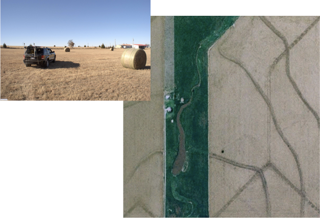
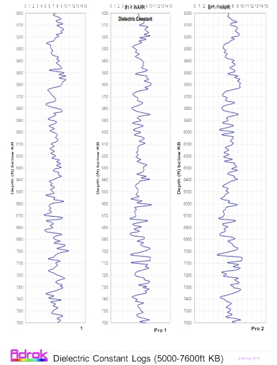
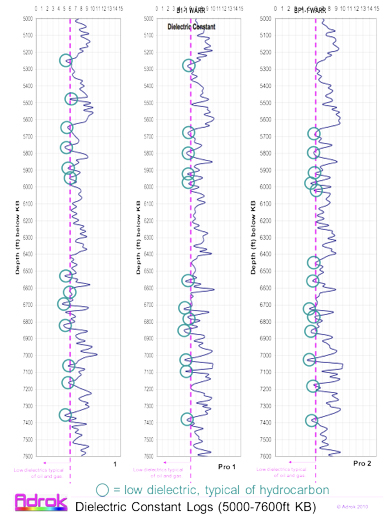
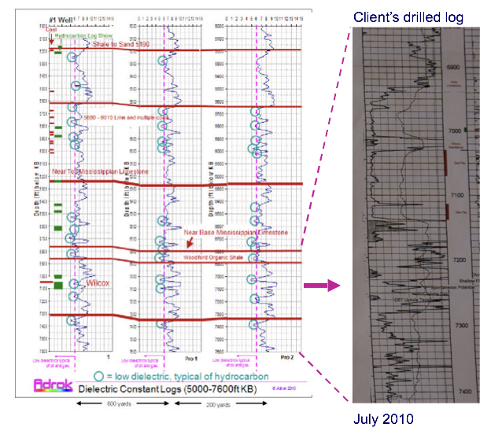
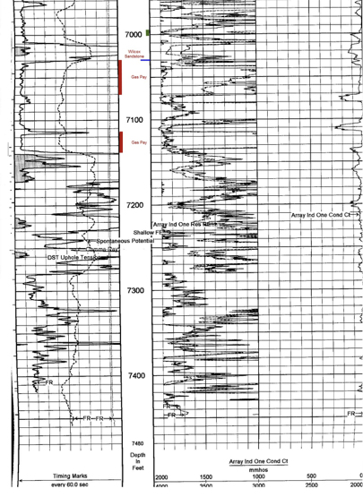
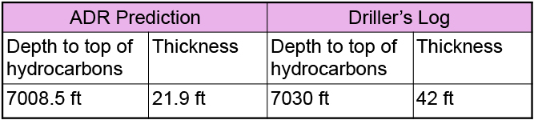

@@include('header.html', {
"level": "third"
})
@@include('section-tabs.html', {
"level": "third"
})
Onshore Oklahoma Oil
field survey
for
USA Independent

- Survey of an onshore basin located in Oklahoma, USA
- Surface terrain comprised low lying farmland
- Adrok trained on 1 drilled well location (for oil, gas & sedimentary rock layer signatures) in basin
- Adrok did not train or typecast on any cored rock samples
- Adrok processed and predicted the virtual borehole log (before spudding commenced)
- Client’s needs were for Adrok to prognose tops of Wilcox rock
- Depth of ADR penetration was over 7500ft
- Prospect site was approximately 1km offset from training well location
- The results of the Adrok survey were compared to the actual drilling results
- No HSE accidents

Adrok’s
Prognosis in
March 2010
(before
client’s
drilling)



- Drilling and testing has confirmed Adrok’s predictions.

- Adrok’s depth accuracy to oil & gas accumulation was 0.3%
- The initial well has now been completed and is producing:
- 1,400,000 cubic feet of gas per day
- 22 barrels of oil per day
@@include('footer.html')